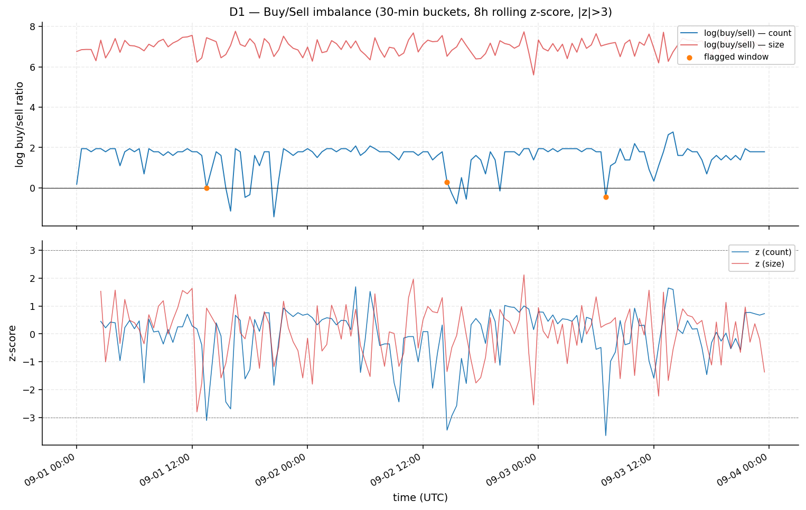
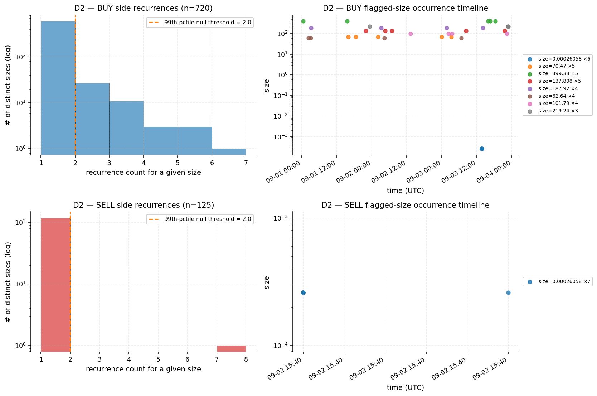
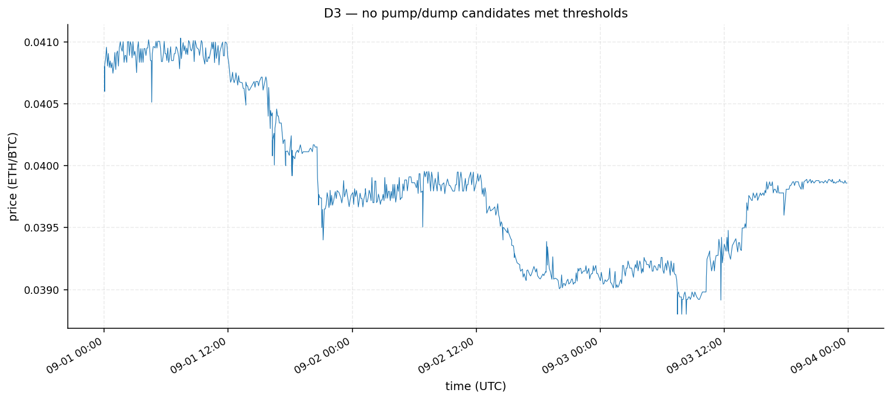
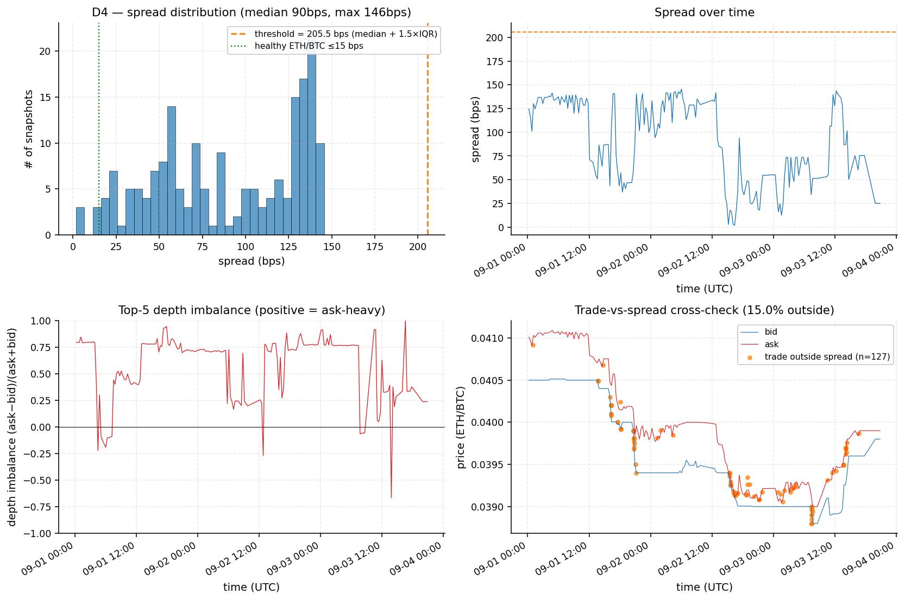
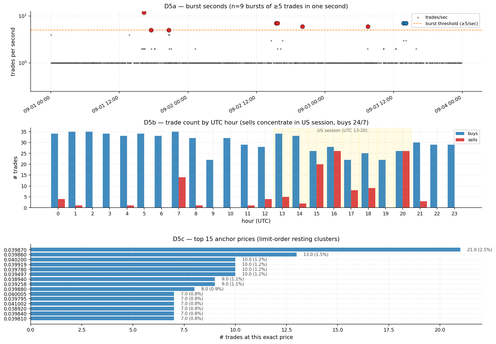
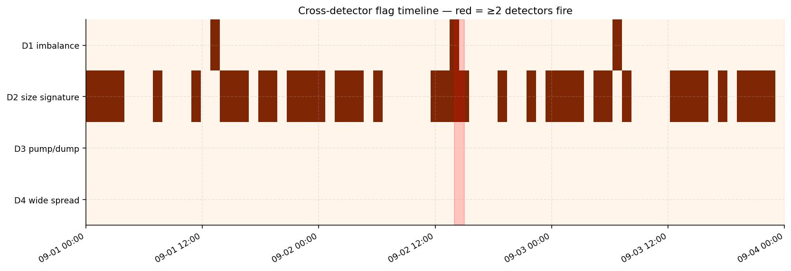

Five-detector forensic framework finds five mutually-consistent signals of automated, likely non-organic activity: extreme one-sided buy flow that does not move price, identical-clip burst signatures on both sides of the book, sub-second multi-trade clusters, an operator schedule asymmetric to US trading hours, and structural liquidity pathology (median spread 89.7 bps, 15% of trades printed outside the contemporaneous bid-ask). A sixth detector adds three peer-corroborated microstructure cross-checks (frozen-orderbook asymmetry 9.15×, Benford rejection at K-S=0.063, cron-style buy intervals with CV=0.69) that independently reject the null of organic two-sided market activity.
Headline numbers
Forensic interpretation
The dataset is consistent with two distinct automated operators on this venue:
- Operator A (buyer) — 24/7 schedule, ETH-large clip sizes (median 188), price impact zero, occasional same-clip burst (0.00026058 × 6 in 1s on 09-03). Generates 99.9994% of size and 85.2% of count. Most parsimoniously: wash flow matched against pre-arranged liquidity.
- Operator B (seller) — US-trading-hours window only, small clip sizes (median 0.0014), generates 14.8% of trade count and 0.0006% of size, moves price −17.8 bps median, multi-position sub-second bursts (12-trade burst on 09-01 16:16:46), occasionally prints below visible bid (D4 cluster on 09-01 20:38–20:42). Looks like real human-supervised bot execution.
Three caveats apply: small sample, single venue, ambiguous unit semantics (the BUY/SELL size disparity may reflect inconsistent unit reporting). All listed in the REPORT § Limitations.
D1 Buy/Sell Imbalance
Method. 30-min buckets, rolling 8h z-score on log((buy+1)/(sell+1)) (count and size). Eps=1 chosen after audit revealed eps=1e-9 inflated z-score in 119/143 buckets containing zero sells (pure log(buy/eps) artifact).
Flagged buckets (all NEGATIVE z-scores — lulls in buy pressure)
| Timestamp UTC | Buy / Sell count | z (count) | z (size) |
|---|---|---|---|
| 2025-09-01 13:30 | 5 / 5 | −3.10 | −2.18 |
| 2025-09-02 14:30 | 3 / 2 | −3.44 | −2.79 |
| 2025-09-03 07:00 | 6 / 10 | −3.64 | −2.79 |
The fact that even count parity (5:5) is a >3σ event tells you how extreme the persistent baseline is. The baseline itself is the anomaly; flagged buckets mark moments the bot pauses or other flow appears.
Price-impact decomposition (Δmid before/after)
| Side | n | median Δmid (bps) | median price vs mid (bps) |
|---|---|---|---|
| buy | 688 | 0.0 | +21.2 (above ask) |
| sell | 121 | −17.8 | −29.1 (below bid) |

D2 Recurring Trade-Size Signatures
Method (corrected from brief). The brief proposed shuffling the size array, which produces a degenerate null (shuffling preserves frequencies). Replaced with KDE-on-log(size): scipy.stats.gaussian_kde per side, 1000 replicates, p99 max-count threshold.
Robustness. Threshold = 2.0 stable across bandwidths {Scott, Silverman, 0.1, 0.3, 0.5, 1.0}. Cross-validated with uniform-on-log-range null (P(null ≥ observed) ≈ 0).
All 13 prints of 0.00026058 ETH (in time order)
| Timestamp UTC | Side | Price |
|---|---|---|
| 2025-09-02 15:40:44 | sell × 6 | 0.039258 |
| 2025-09-02 15:40:45 | sell × 1 | 0.039258 |
| 2025-09-03 13:43:45 | buy × 6 | 0.039497 |
Doubling ladder (Monte Carlo verified)
Among 18 flagged BUY sizes, 8 form 4 explicit 2× pairs: 62.64 ↔ 125.28 ↔ 250.56 (chain), 93.96 ↔ 187.92, 137.808 ↔ 275.616. Under MC null (random samples of 18 sizes from BUY distribution, 2000 reps), expected 2× pairs = 0.09 (max observed 2). P(null ≥ 4) = 0.0000.

D3 Pump-and-Dump
Findings. 0 candidates met all three criteria. Sensitivity test at vol_z>1.5, move>0.3%, reversal>30% surfaces 2 sub-threshold dump-recovery events (09-01 04:00, 09-03 07:00), both below industry-standard cutoffs.
Price moves in a 5.7% band (0.0388 → 0.0410) over the 72h window. The market does not pump despite 99.9994% one-sided size pressure — corroborates D1's "buys don't move price" reading.

D4 Liquidity Quality
Tolerance audit. OB inter-snapshot intervals: median 18.3 min, mean 22 min, max 2.4 hours. The brief's 5min tolerance matched only 22.5% of trades. Switched to 30 min (matches 87.8%, gives stable ~17% outside-spread rate consistent with longer tolerances).
Spread distribution (188 snapshots, bps)
| min | p25 | median | p75 | p95 | max |
|---|---|---|---|---|---|
| 1.83 | 54.50 | 89.71 | 131.67 | 141.17 | 145.58 |
The entire distribution sits 6-18× above the 5-15 bps baseline that liquid ETH/BTC venues quote. Either low-quality venue or systemic stale quoting.
Outside-spread breakdown
127 of 845 trades (15.0%) printed at prices outside the contemporaneous best bid-ask, of which 65 are sells and 62 are buys. Sells are 14.8% of all trades but 51% of outside-spread prints (3.5× over-representation). The most extreme deviations cluster in two coordinated SELL bursts:
| Timestamp UTC | n | Price | Dev from mid (bps) |
|---|---|---|---|
| 2025-09-01 20:38:40 | 4 sells | 0.039900 | −33.8 |
| 2025-09-01 20:42:38–20:42:40 | 7 sells | 0.039809 | −56.5 |
Coordinated sub-bid sell prints in the same one to two seconds are consistent with hidden-iceberg fills, off-book reporting, or stale snapshot publication.

D5 Burst Execution / Time-of-Day / Anchor Prices
5a. Burst seconds (≥5 trades in one second)
| Timestamp UTC | n | Side | Unique sizes | Note |
|---|---|---|---|---|
| 2025-09-01 16:16:46 | 12 | sell | 12 (varied) | largest single burst |
| 2025-09-03 14:10:23 | 7 | buy | 7 (varied) | |
| 2025-09-03 13:43:45 | 7 | buy | 2 | 0.00026058 cluster (D2) |
| 2025-09-02 15:25:45 | 7 | sell | 7 (varied) | |
| 2025-09-02 15:40:44 | 7 | sell | 2 | 0.00026058 cluster (D2) |
| 2025-09-02 20:02:23 | 6 | sell | 6 (varied) | |
| 2025-09-03 07:28:17 | 6 | sell | 6 (varied) | |
| 2025-09-01 20:38:39 | 5 | sell | 5 (varied) | aligns with D4 sub-bid cluster |
| 2025-09-01 17:32:42 | 5 | sell | 5 (varied) |
5b. Time-of-day asymmetry
Sells occur in only 15 of 24 UTC hours. Hours with zero sells: UTC 2, 3, 5, 6, 9, 10, 19, 22, 23. Activity concentrates in UTC 13–21 (US trading session ≈ 09:00–17:00 EST). Minimum buy-share is 50.0% at hour 20 (US market close). The seller(s) operate on a US schedule; buyer(s) operate continuously.
5c. Top anchor prices
Top recurring price 0.039870 appears 21 times (2.5% of all trades). Top 5 prices = 7.6%, top 20 = 20.4%. Concentration on specific tick-rounded levels without round-number bias suggests resting-limit-order anchoring.

D6 Microstructure cross-checks (peer-corroborated)
6a. Frozen orderbook (one-sided staleness)
Byte-comparing each serialized snapshot against the previous, by side. 119 of 187 pairs (63.6%) have an identical bid; only 13 of 187 (7.0%) have an identical ask — a 9.15× asymmetry. Longest frozen-bid run: 18 consecutive snapshots (2025-09-02 20:05 UTC → 2025-09-03 02:11 UTC ≈ 6h 6m). An ask repriced ~9× more often than its paired bid is not consistent with two-sided market making — corroborates D4's persistent +0.72 median bid-side depth imbalance.
6b. Benford's Law conformity
K-S test on the first-digit distribution of trade sizes (n=845): K-S = 0.0626 > critical 0.0468 at α=0.05 → reject Benford-conformity. Digits 1+2 combined = 52.3% (vs 47.7% expected) driven by an excess of leading 2's; digits 7+8+9 are under-represented by ~6 pp. Fingerprint of size generation that prefers a narrow magnitude band rather than spanning organic decades.
6c. Inter-trade interval regularity (Sep-3 14:00+ UTC, buy side)
n = 95 buys; median gap = 318 s (≈ 5 min 18 s); IQR = 295.25 – 341.0 s (50% of gaps within ±23 s of median); coefficient of variation = 0.69. Tight IQR ≈ ±8% of median is consistent with a cron-style scheduler with light jitter, not human-decision-driven order flow.
XR Cross-detector triangulation
Strict per-bin co-occurrence is sparse: only one hourly bin has both D1 and D2 firing — 2025-09-02 14:00 UTC, which is 70 minutes before the SELL burst of seven 0.00026058 ETH prints at 15:40:44. Suggestive of "bot pauses, then runs the other side" but not load-bearing on a single bin.
The two strongest individual events stand on their own evidence: (1) 12-trade SELL burst at 09-01 16:16:46, and (2) the twin 0.00026058 ETH bursts at 09-02 15:40 / 09-03 13:43. Either alone is a near-impossible event under any IID null over 72h.

Repro Reproducibility
git clone <fork-url>
cd <fork>/mkzung-ethbtc-analysis
make all # install + pytest + analyze + audit + open this dashboard
# Or step-by-step
pip install -r requirements.txt
python -m pytest tests/ -v # 46 unit tests
python analyze.py --trades ../eth-btc-trades.csv \
--orderbooks ../eth-btc-orderbooks.csv
python audit.py
python calibration.py # detectors-on-clean-data calibration
REPORT.md · findings.json · audit.txt · notebooks/01_analysis.ipynb
Re-running on a fresh clone produces byte-identical findings.json (KDE null seeded at 42; doubling-ladder MC seeded). Verified.